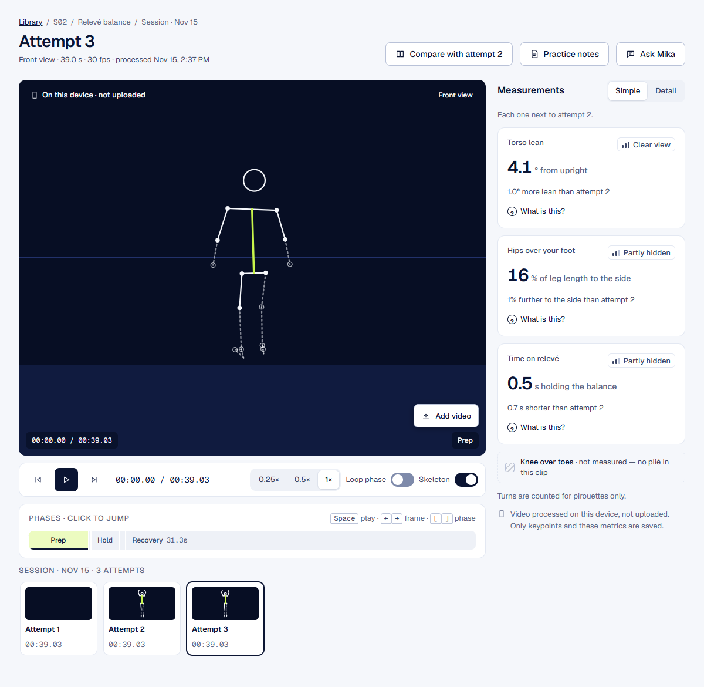
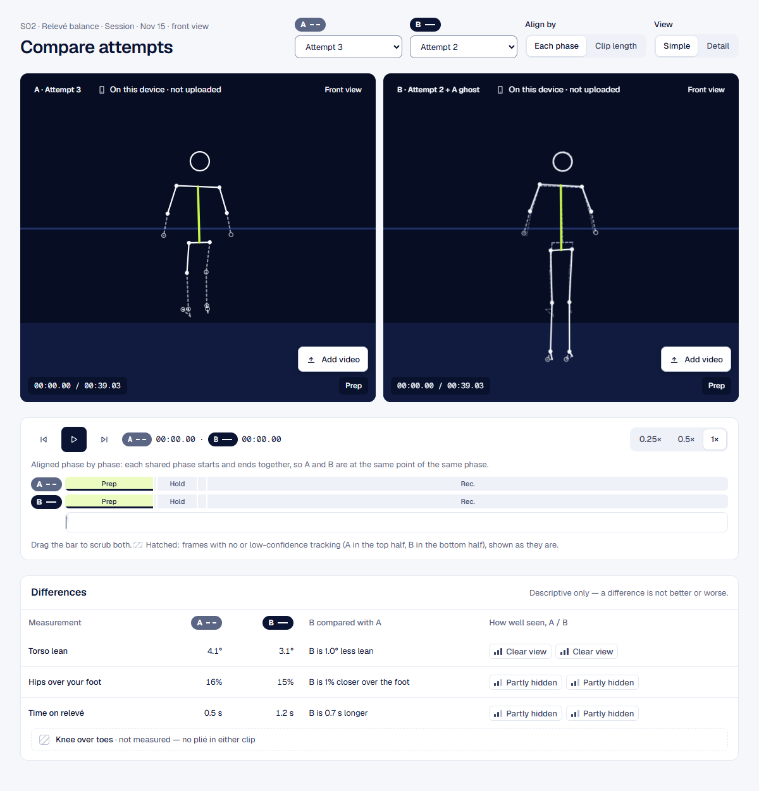

Import a clip
Pick a video of one movement. The pose is found on your device; the video is never uploaded.
KSU CS 4850 · Capstone · MT-2-HCI
Record a relevé. The app finds your pose on your own device and turns each attempt into a few clear measurements you compare with your own earlier attempts.
It shows your own numbers and how they change between attempts. It never scores you.
How it works
Built around one movement at a time: a relevé balance in parallel, the alignment a teacher watches for in class.
Pick a video of one movement. The pose is found on your device; the video is never uploaded.
Watch the skeleton over your clip, phase by phase: prep, rise, hold, finish.
Line up two of your own attempts, phase by phase, and see what changed in plain words.


The app
What it measures
Each one says how well your body was seen, so you always know how much to trust it.
How far your torso tips from straight up, hips to shoulders.
How far your hips sit to the side of the supporting foot.
How long you held the balance up on relevé, hips steady.
In plié, the angle between where your knee and your toes point.
When tracking is missing, you see a gap and the reason, never a made-up number.
Privacy by design
Meet Mika
Ask about one attempt and Mika replies with that attempt’s measurements, compared with your earlier ones. It does not grade technique. The name honours the project’s domain mentor.
Team
Kennesaw State University · CS 4850 Senior Project · Fall 2026
The sample uses synthetic attempts measured by the real engine, so you can explore without a video.
Create a free account